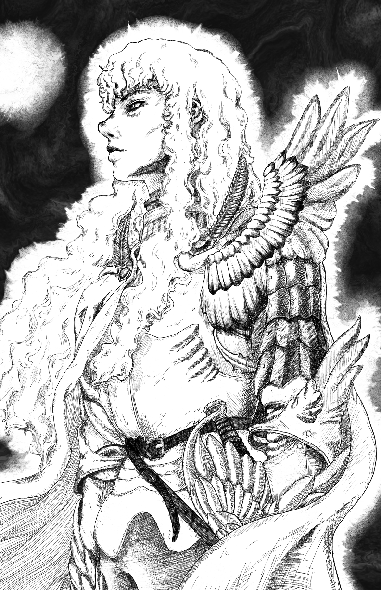
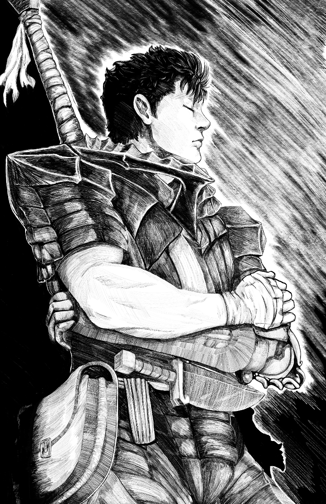

Digital painting offers a vast array of tools, and I utilized a Wacom graphics tablet and painting software, Clip Studio Paint for the artwork. The advantage of digital media is the ability to experiment with colors, textures, and layers, all without wasting physical materials. Layering is where the magic happens. I started with a rough background and progressively added layers for the martial artist, the swirling motif in the background, and the finer details within the hanfu. I paid particular attention to the flow of the robe, the precision of the movements, and the facial expression, which conveyed a sense of focused determination. The color palette played a pivotal role in conveying the Daoist philosophy. Deep, rich tones of greens, blues, and grays were used for the background. The martial artist's robe in contrast is a light, airy grey to ground the composition. The overall colors were designed to evoke a sense of inner peace and balance. Once the main elements were in place, I added subtle finishing touches, such as gentle light and white highlights, which added an ethereal quality to the scene. Additionally, the martial artist's energy was depicted through the swirling motion lines, evoking the concept of "qi" or life force. Creating a digital painting of a Chinese Daoist martial artist was not only a creative endeavor but also a journey into the heart of Daoism itself. The blend of martial prowess with spiritual depth is a testament to the enduring cultural legacy of China. Through this painting, I hope to share a glimpse of this ancient wisdom and inspire others to explore the profound beauty of Daoist philosophy and martial arts. In art, as in life, it's about finding balance, harmony, and the Way of the Dao.
Posted by Lillian Marsh
BERSERK: TRIBUTE TO THE LEGACY OF KENTARO MIURA
Published on


Kentaro Miura, the brilliant mangaka best known for his magnum opus, "Berserk," left an indelible mark on the world of manga and art. Miura's untimely passing in May 2021 was a somber moment for manga enthusiasts and artists worldwide. In tribute to this iconic author and artist, I created two artworks that reflect the profound impact he had on both the manga industry and the artistic community. The series became renowned for its meticulous artwork, characterized by Miura's obsessive attention to detail. His illustrations were a fusion of dark fantasy and realism, and they often left readers in awe of his ability to depict everything from intricate armor designs to grotesque creatures with unparalleled precision. Miura's impact on the manga industry extended far beyond "Berserk." He set new standards for artistry in manga, inspiring countless artists to push their creative boundaries. His contributions to the medium earned him respect and admiration from both peers and fans. In my two pieces, I paid homage to Miura's most iconic characters, Guts and Griffith. For Guts, the somber expression, towering sword, and detailed armor are all elements that defined Miura's signature style. It is a way to remember the enduring legacy of "Berserk" and its protagonist, who will forever stand as a symbol of resilience and strength. For Griffith, his ethereal appearance and nonchalant demeaner work to show the depth of his characterization and his role as a friend turned enemy. As we remember Kentaro Miura, we celebrate his contributions to the art of storytelling, character development, and intricate illustration. His work inspired artists to reach new heights, explore the depths of human emotion, and immerse themselves in the dark beauty of fantasy- and I tried my best to emulate his art style in my own way.